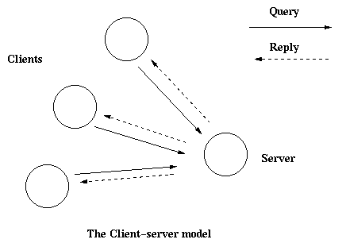

本章要与 gen_server(3) 结合起来阅读，它详细描述了所有的接口函数和回调函数。
客户端－服务器端（C/S）模型的特点是：一个中央服务器和任意数量的客户端。C/S模型通常用于资源管理操作，其中一些不同的客户端要共享一个公共资源。服务器负责管理这些资源。

在概述中，已经有一个用普通Erlang方式写的简单服务器。这个服务器可以用 gen_server 进行重写，结果产生这个回调模块：
-module(ch3).
-behaviour(gen_server).
-export([start_link/0]).
-export([alloc/0, free/1]).
-export([init/1, handle_call/3, handle_cast/2]).
start_link() ->
gen_server:start_link({local, ch3}, ch3, [], []).
alloc() ->
gen_server:call(ch3, alloc).
free(Ch) ->
gen_server:cast(ch3, {free, Ch}).
init(_Args) ->
{ok, channels()}.
handle_call(alloc, _From, Chs) ->
{Ch, Chs2} = alloc(Chs),
{reply, Ch, Chs2}.
handle_cast({free, Ch}, Chs) ->
Chs2 = free(Ch, Chs),
{noreply, Chs2}.
在下一节中会解释这段代码。
在前一节中的代码，可以通过 ch3:start_link() 来启动这个gen_server：
start_link() ->
gen_server:start_link({local, ch3}, ch3, [], []) => {ok, Pid}
start_link 调用了函数 gen_server:start_link/4 。这个函数产生了一个新进程一个gen_server并联接到其上。
在注册名称成功后，新的gen_server进程会调用回调函数 ch3:init([]).。init返回 {ok, State} ，其中 State 是gen_server的内部状态。在这里，状态就是可用的频道。
init(_Args) ->
{ok, channels()}.
注意 gen_server:start_link 是同步的。只有等到gen_server被完全初始化并准备接受请求之后才会返回。
如果gen_server是某棵监督树的一部分，即gen_server是由一个督程启动的，那么必须使用 gen_server:start_link 。还有另外一个函数 gen_server:start 用于启动一个独立的gen_server，即不是某棵监督树一部分的一个gen_server。
同步请求 alloc() 是使用 gen_server:call/2 实现的：
alloc() ->
gen_server:call(ch3, alloc).
ch3 是gen_server的名字，必须和启动时的名字一样。 alloc 是实际的请求。
请求以消息的形式发送给这个gen_server。当收到了请求之后，gen_server调用 handle_call(Request, From, State) ，它应返回一个元组 {reply, Reply, State1}。Reply是需要回馈给客户端的答复，同时 State1 是gen_server的状态的新值。
handle_call(alloc, _From, Chs) ->
{Ch, Chs2} = alloc(Chs),
{reply, Ch, Chs2}.
在这里，应答是分配了的频道 Ch 然后gen_server将等待新的请求，并且现在保持了一个最新的可用频道的列表。
异步请求 free(ch) 使用 gen_server:cast/2 实现：
free(Ch) ->
gen_server:cast(ch3, {free, Chr}).
ch3 是gen_server的名称。 {free, Ch} 是实际的请求。
请求被装在一个消息中发给gen_server的 cast ，这调用了 free ，然后返回了 ok 。
当gen_server收到请求之后，它会调用 handle_cast(Request, Stats) ，会返回一个元组 {noreply, State1} 。 State1 是gen_server状态的新值。
handle_cast({free, Ch}, Chs) ->
Chs2 = free(Ch, Chs),
{noreply, Chs2}.
在这里，新的状态便是更新过的可用频道列表 Chs2 。gen_server现在又可以接受新的请求了。
若gen_server是某个监督树的一部分，则无需停止函数。它的督程会自动终止它。它的具体做法由督程中设置的 关闭策略 定义。
如果在终止之前需要进行一些清理工作，那么关闭策略必须是一个超时值，同时gen_server必须在 init 函数中设置为捕获退出信号。当gen_server被要求关闭时，它就会调用回调函数 terminate(shutdown, State) ：
init(Args) ->
...,
process_flag(trap_exit, true),
...,
{ok, State}.
...
terminate(shutdown, State) ->
..code for cleaning up here..
ok.
如果gen_server并非某个监督树的一部分，那么可以用一个停止函数，例如：
...
export([stop/0]).
...
stop() ->
gen_server:cast(ch3, stop).
...
handle_cast(stop, State) ->
{stop, normal, State};
handle_cast({free, Ch}, State) ->
....
...
terminate(normal, State) ->
ok.
回调函数处理 stop 请求并返回一个元组 {stop, normal, State1} ，其中 normal 表示这是一个正常的终止， State1 是gen_server状态的新值。这会引发gen_server调用 terminate(normal, State1) 来优雅地终止。
如果要想gen_server还能处理请求之外的消息，必须实现回调函数 handle_info(Info, State) 来处理他们。例如，如果gen_server联结到其它进程（非督程）上并捕获退出信号，那么其它的消息就有退出消息。
handle_info({'EXIT', Pid, Reason}, State) ->
..code to handle exits here..
{noreply, State1}.